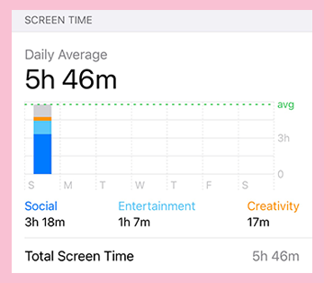
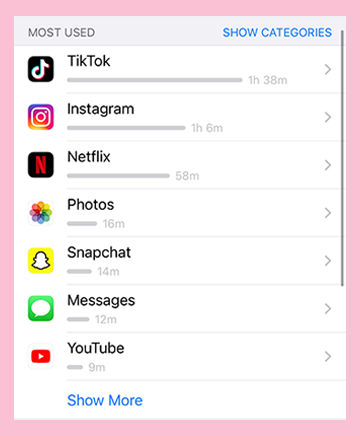
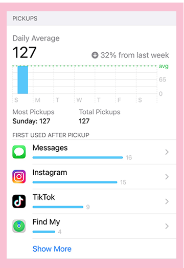
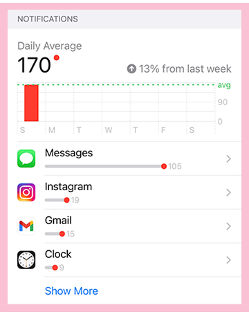

<!DOCTYPE html>
<html lan="en"></html>
<head>
    <title>Jazz's Time Capsule</title>
    <meta charset="UTF-8">
    <link rel="stylesheet" type="text/css" href="../css/main.css">
    <link rel="stylesheet" href="https://use.typekit.net/fzl6wno.css">
</head>
<nav>
    <a href="../index.html"></a>
    <a href="../interests/interests.html"></a>
    <a href="../activity/activity.html"></a>
</nav>
<body>
	<header>
        <h1>&#9733 Activity &#9733 </h1>
    </header>
    <p> Our observations have calculated that much of Jazz's activity on our platform is a means of having a mental escape and to have fun/stay inspired. If you scroll below you will find that she is constantly listening to music</p>
    <header>
        <h3>Jazz's Most Listened To Playlists</h3>
    </header>
    <p> Jazz is almost virtually always listening to these two playlists. She listens to "Sh*t On My IPod Shuffle" when she just wants to listen to all of the random songs she has in her library. Jazz typically listens to the second playlist "Songs To Wake Up To" in the morning to give her a positive pick-me-up.</p>
    <iframe src="https://open.spotify.com/embed/playlist/6ZlmvC9XkhP1sT8NZslS6M" width="80%" height="380" frameBorder="0" allowtransparency="true" allow="encrypted-media"></iframe>
    <iframe src="https://open.spotify.com/embed/playlist/10NZK4RAN02JI5SQrI4VfQ" width="80%" height="380" frameBorder="0" allowtransparency="true" allow="encrypted-media"></iframe>
    <header>
        <h3>Jazz's Most Listened To Podcast</h3>
    </header>
    <p> Jazz's most listened to podcast is "We Said What We Said" with Ricky Thompson and Denzel Dion which is a comedy and lifestyle podcast. Jazz really enjoys listening to this podcast while she cooks and/or gets ready for school.</p>
    <iframe src="https://open.spotify.com/embed/show/3TY4pXn8BgFa3Lfdt7b1pJ" width="80%" height="380" frameBorder="0" allowtransparency="true" allow="encrypted-media"></iframe>
    <header>
        <h3>Overall Weekly Actvity of Jazz's Phone Usage</h3>
    </header>
    <p> Throughout her week, Jazz uses the majority of her screen time on social media. The app she tends to spend the most on is TikTok, followed by Instagram which is her second most used app. Additionally, Jazz tends to pick up her phone 127 times a week and recieves on average of 170 notifications. </p>
    
    
    
    
    
    
    
</body>